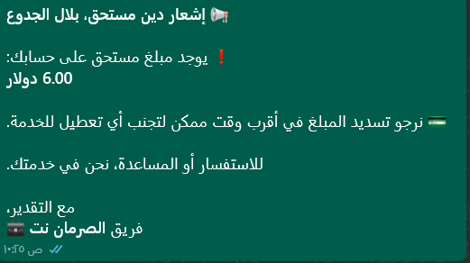
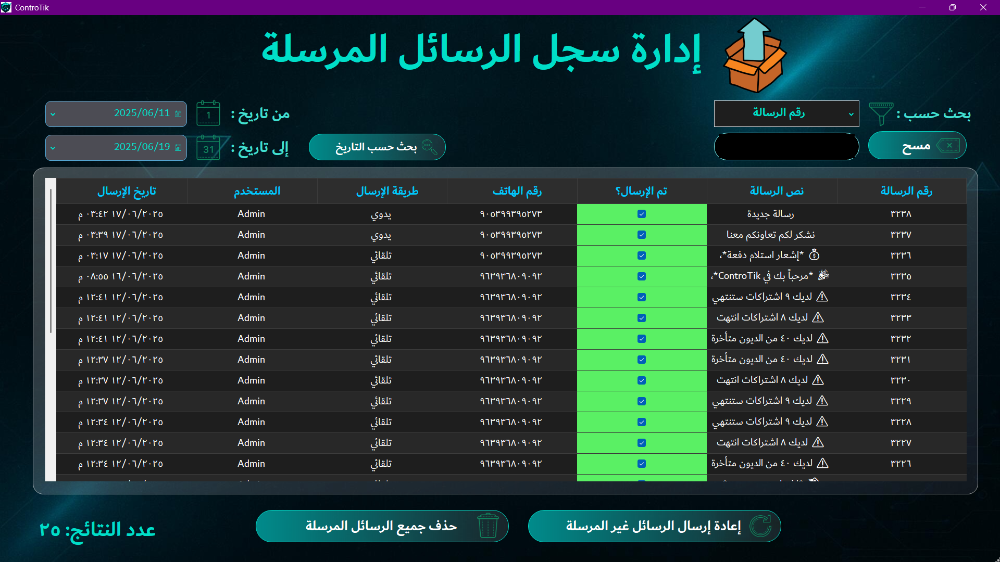

آلية المطالبة الذكية بالديون في ControTik

يوفّر ControTik نظامًا ذكيًا للمطالبة بالديون، يعمل بشكل تلقائي ويومي دون تدخل بشري، لضمان
تذكير المشتركين المستحقين بسداد ديونهم في الوقت المناسب.
🔹 الرسائل التلقائية اليومية: يتم إرسال رسالة واتساب تلقائيًا للمشترك الذي:
- عليه جزء من دين لم يتم تسديده بعد.
- تجاوز موعد استحقاق الدين.
🔹 محتوى الرسالة: تتضمن الرسالة البيانات التالية:
- اسم المشترك
- المبلغ المتبقي
- نفاصيل أخرى
🔹 فلترة دقيقة للمستحقين: لا يتم إرسال الرسائل للجميع، بل فقط للمشتركين الذين:
- لم يسددوا كامل الدين
- لمن تأخروا عن سداد دينهم عن الموعد المحدد
🔹 تنوع التذكيرات: النظام يغيّر صيغة الرسالة تلقائيًا حسب حالة المشترك، مثلاً:
- 📌 "أنت متأخر بـ 3 أيام عن سداد اشتراكك، يرجى السداد لتجنب قطع الخدمة."
- 📌 "نذكّرك بأن لديك دين مستحق قدره 25 ألف ليرة منذ 5 أيام، آخر مهلة للدفع غدًا."
🔹 تكامل ذكي: نظام المطالبة التلقائية مرتبط مباشرة بأنظمة:
- الديون: لا يتم إرسال أي رسالة إذا تم السداد أو إغلاق الدين.
- نظام الرسائل: يُسجل كل إرسال تلقائي مع التوقيت والنص.
- نظام التقارير: يُعرض عدد الرسائل المرسلة يوميًا وشهريًا.
